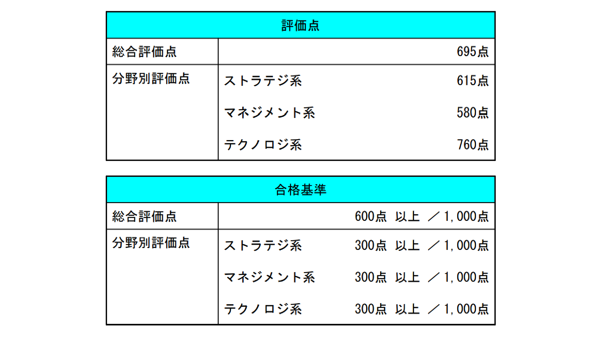

2026/04/03 - ITパスポート試験合格！

3/31にITパスポート試験を受け、無事見込み合格となりました！過去問道場では8～9割取れていたので余裕ぶちかましてたんですが、本番ギリ7割いかなくてなんだかんだ危なかったです……。とにかくこの調子で基本情報の方も勉強頑張ります！また、正式な合格発表を確認次第、追記で報告予定です。 追記報告がだいぶ遅れてしまいましたが、少し前に、無事正式合格の証明書が届きました。（2026/06/18）
3/31にITパスポート試験を受け、無事見込み合格となりました！過去問道場では8～9割取れていたので余裕ぶちかましてたんですが、本番ギリ7割いかなくてなんだかんだ危なかったです……。とにかくこの調子で基本情報の方も勉強頑張ります！また、正式な合格発表を確認次第、追記で報告予定です。 追記報告がだいぶ遅れてしまいましたが、少し前に、無事正式合格の証明書が届きました。（2026/06/18）